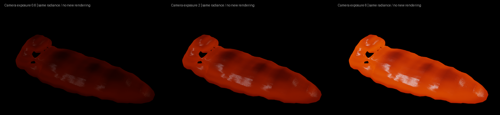

Implemented repairs and CPU evidence
- Removed the specified initial slabs and pore cuts from the replacement case.
- Added finer vertical MPM cells with axis-correct transfer, heat conduction and boundary geometry.
- Aligned crystal-network, connectivity and tensile-failure activation.
- Preserved Newtonian melt viscosity after fracture and verified remelted damaged material against fresh liquid.
- Corrected fractured inlet/ground reflection and tested the captured failure.
- Kept coupled contact constraints that become active during the solve.
- Removed stretched-kernel surface terraces and verified continuous solid-fraction import into Mitsuba.
25 relevant component checks pass. The earlier spatial refinement gate is still unresolved. A larger-timestep trial failed and was rejected. These results do not establish production realism.
The inlet stopped at 2.333 seconds; the same material then cooled in the full mechanical and thermal solve to 4.994 seconds. No hand-painted cracks or extra cooling sink were added. The cooling diagnostic also fails the visual target.
The original 0.6 exposure was too dark. This image uses exposure 2 from the same saved radiance; no extra rendering was performed for exposure review.
